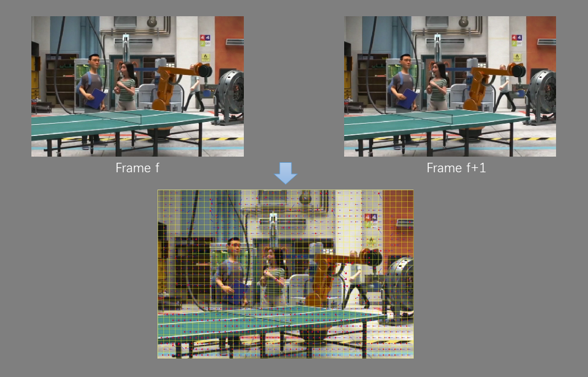

Publications
2020
YOLO-Tomato: A Robust Algorithm for Tomato Detection based on YOLOv3.
Guoxu Liu, Joseph Christian Nouaze, Philippe Lyonel Touko, Jae Ho Kim.
Sensors, 2020, 20(7)
PDF Webpage BibTeX
Guoxu Liu, Joseph Christian Nouaze, Philippe Lyonel Touko, Jae Ho Kim.
Sensors, 2020, 20(7)
PDF Webpage BibTeX
@article{liu2020yolo,
author = {Liu, Guoxu and Nouaze, Joseph Christian and Touko, Philippe Lyonel
and Kim, Jae Ho},
title = {YOLO-Tomato: A Robust Algorithm for Tomato Detection based on YOLOv3},
journal = {Sensors},
volume = {20},
number = {7},
pages = {2145},
year = {2020},
url = {https://www.mdpi.com/1424-8220/20/7/2145},
issn = {1424-8220},
doi = {10.3390/s20072145}
}
Bioelectrical Impedance Spectroscopy (BIS) Monitoring of Lettuce during 19 Hours.
Joseph Christian Nouaze, Philippe Lyonel Touko, Guoxu Liu, Jae Hyung Kim, Jae Ho Kim.
2020 8th International Symposium on Sensor Science (I3S 2020) (Accepted)
Joseph Christian Nouaze, Philippe Lyonel Touko, Guoxu Liu, Jae Hyung Kim, Jae Ho Kim.
2020 8th International Symposium on Sensor Science (I3S 2020) (Accepted)

Facial Expression Recognition of Animated Human Characters.
Guoxu Liu, Hui Jin, Hailong Jiang, Jae Ho Kim.
ICMLC 2020
PDF BibTeX
Guoxu Liu, Hui Jin, Hailong Jiang, Jae Ho Kim.
ICMLC 2020
PDF BibTeX
@inproceedings{liu2020facial,
author = {Liu, Guoxu and Jin, Hui and Jiang, Hailong and Kim, Jae Ho},
title = {Facial Expression Recognition of Animated Human Characters},
booktitle = {Proceedings of the 2020 12nd International Conference on
Machine Learning and Computing},
pages = {313--317},
year = {2020}
}
2019

A Mature-Tomato Detection Algorithm Using Machine Learning and Color Analysis.
Guoxu Liu, Shuyi Mao, Jae Ho Kim.
Sensors, 2019, 19(9)
PDF Webpage BibTeX
Guoxu Liu, Shuyi Mao, Jae Ho Kim.
Sensors, 2019, 19(9)
PDF Webpage BibTeX
@article{liu2019mature,
author = {Liu, Guoxu and Mao, Shuyi and Kim, Jae Ho},
title = {A Mature-Tomato Detection Algorithm Using Machine Learning and Color
Analysis},
journal = {Sensors},
volume = {19},
number = {9},
pages = {2023},
year = {2019},
url = {http://www.mdpi.com/1424-8220/19/9/2023},
issn = {1424-8220},
doi = {10.3390/s19092023}
}
A Robust Mature Tomato Detection in Greenhouse Scenes Using Machine Learning and Color Analysis.
Guoxu Liu, Shuyi Mao, Hui Jin, Jae Ho Kim.
ICMLC 2019
PDF Video BibTeX
Guoxu Liu, Shuyi Mao, Hui Jin, Jae Ho Kim.
ICMLC 2019
PDF Video BibTeX
@inproceedings{liu2019robust,
author = {Liu, Guoxu and Mao, Shuyi and Jin, Hui and Kim, Jae Ho},
title = {A Robust Mature Tomato Detection in Greenhouse Scenes Using Machine
Learning and Color Analysis},
booktitle = {Proceedings of the 2019 11th International Conference on
Machine Learning and Computing},
pages = {17--21},
year = {2019}
}
Emotion Decision Method of A Situation-based for Emotion Study of Animation Lion King in Film.
Jong Dae Kim, Guoxu Liu, Jae Ho Kim.
The Journal of Image and Cultural Contents (KCI)
PDF
Jong Dae Kim, Guoxu Liu, Jae Ho Kim.
The Journal of Image and Cultural Contents (KCI)
2018
A multidisciplinary analysis of the main actor's conflict emotions in Animation film's Turning Point.
Tae Rin Lee, Jong Dae Kim, Guoxu Liu, Ingabire Jesse, Jae Ho Kim.
Korea Science & Art Forum (KCI)
PDF
Tae Rin Lee, Jong Dae Kim, Guoxu Liu, Ingabire Jesse, Jae Ho Kim.
Korea Science & Art Forum (KCI)
2017

Various Camera Motion Type Estimation of Animation Sequences.
Hailong Jiang, Guoxu Liu, Jae Ho Kim.
2017 Conference KMMS
Poster
Hailong Jiang, Guoxu Liu, Jae Ho Kim.
2017 Conference KMMS
Poster
Study of SUVm Cut-off Value for the Distinction of Pancreatic Cancer In PET/CT Exam.
Boseok Chang, Jae Ho Kim, Guoxu Liu, Eun Sung Jang.
The Journal of the Korea Contents Association (KCI)
PDF
Boseok Chang, Jae Ho Kim, Guoxu Liu, Eun Sung Jang.
The Journal of the Korea Contents Association (KCI)